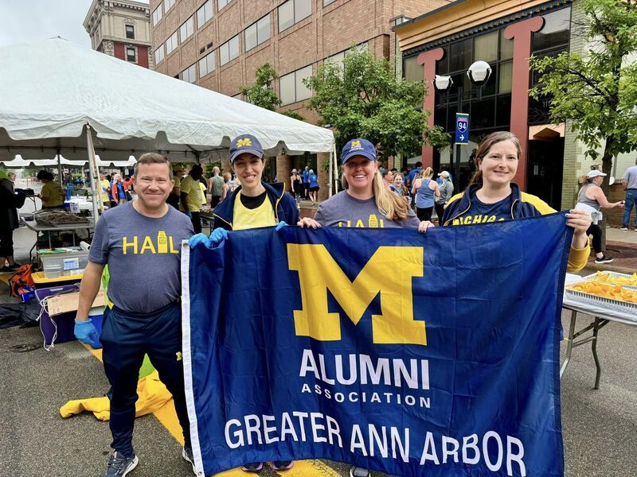

Start Building Connections
Networking is not about “using people”—it’s about building genuine relationships that help you learn about roles, industries, and opportunities. The resources below will help you reach out professionally and confidently.

Key Resources
Networking FAQ
-
Who should I reach out to first?
Begin with low-pressure contacts: classmates, alumni, student org members, or people who share a role you’re interested in. A small shared connection can make the first outreach feel easier. -
How many messages should I send if I don’t hear back?
One follow-up is enough. Wait about 5–7 days, send a brief and friendly follow-up, then move on if there’s no response. -
Do I need LinkedIn Premium to network?
No. A clear profile, a thoughtful message, and consistent effort matter more than paid features. You can also network through events, student groups, and alumni communities. -
What should I ask for in a first message?
Avoid asking for a job. Ask for a short chat (15–20 minutes) or a few questions about their role, team, or career path. This keeps the request reasonable and respectful.
Common Networking Mistakes to Avoid
Networking works best when it feels like a real conversation—clear, respectful, and specific. Before you send a message or attend an event, check for these common pitfalls that can make networking less effective.
- Sending vague messages: Avoid “Hi, can we chat?” with no context. Include who you are, why you reached out, and what you’d like to learn.
- Asking for a job immediately: First conversations should focus on learning and building rapport. A better goal is clarity about roles, skills, and next steps.
- Not doing basic research: Skim their profile or the organization website first. Then ask questions that show you’ve done a little homework.
- Forgetting to follow up: If someone replies or meets with you, send a short thank-you message. If they gave advice, follow up later with an update—it helps build a real relationship.
- Talking only about yourself: Share your goals, but ask thoughtful questions and listen. Good networking is a two-way exchange, not a pitch.
If you’re not sure what to say, start with a template and personalize it. Keep it short, respectful, and easy to answer.